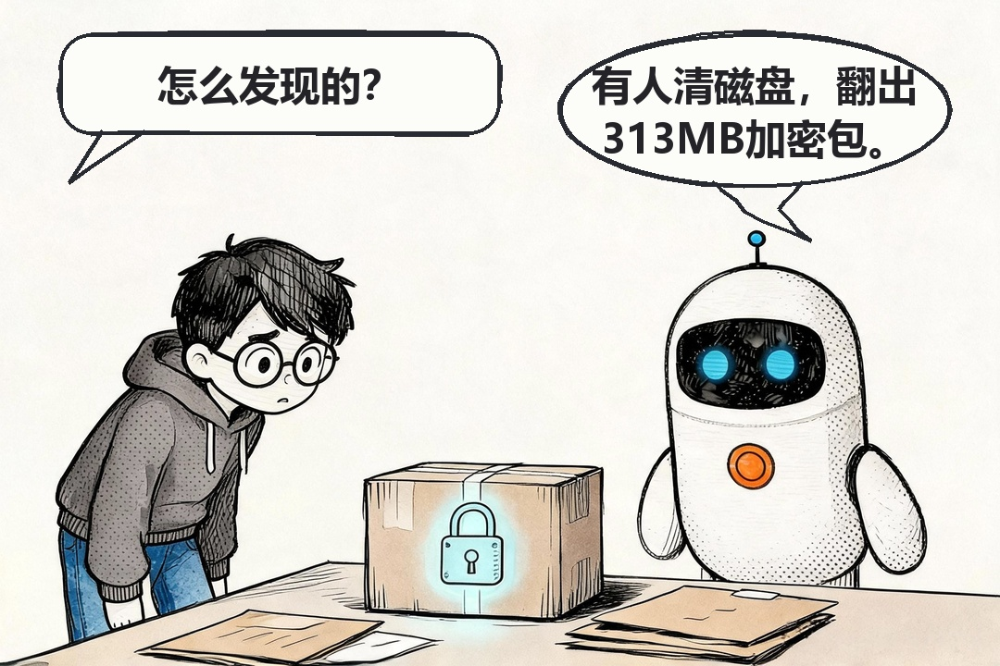
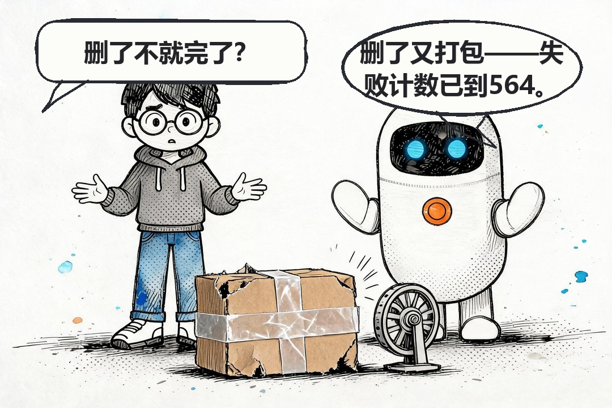
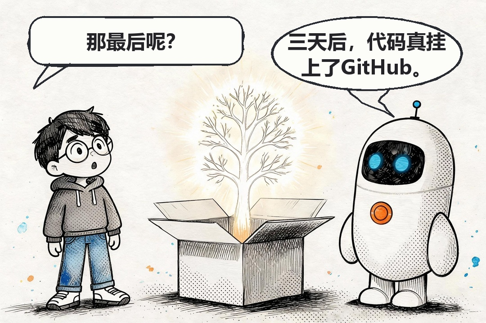

你的 Git 历史，是怎么「自己走出家门」的
一个加密包裹，把 AI 编程工具的数据边界问题推上了台面。三天，从曝光到开源——这篇用大白话把整件事讲清楚。
9 月 18 日：从 700MB 开始的案中案
起因特别日常：一位开发者觉得磁盘吃紧，想弄明白 AI 编程工具 ZCode 的数据目录为什么占了 700MB。结果在 ~/.zcode/v2/checkpoints 底下，翻出一个 313MB 的加密包。
顺着包上的元数据往里查，事情大了：只要账号登录着，这个工具就会把整个工作区——代码、配置、甚至完整的 Git 提交历史——打包、加密、传到云上。默默地，不问你。

包裹里装的是你的全部脚印
逆向分析的结论是：整个项目的快照。更扎心的是构成——上传量里 86.6% 是 Git 历史。
Git 历史是什么？是这个项目从第一行代码到今天的全部脚印：每一版改动、每一条提交说明、改过的文件名、删掉又没删干净的敏感信息。如果你曾经把 API 密钥提交进仓库、后来又删除——那份密钥至今还躺在历史里。代码可以重写，历史没法伪造。
你的 Git 历史，比代码更懂你。
传到哪去了？云端对象存储，而且是加密后上传——听起来是好事？坏在那把钥匙：解密私钥只在服务端手里，你自己打不开自己代码的包裹。相当于把保险箱寄存在别人家，锁是好的，但钥匙人家也有一把。
删了不就完了？这才是最让人后背发凉的部分：没用。开发者第一次发现后直接删了待上传队列里的归档，半小时后客户端重新捕获、重新打包出一份新的 313MB，重试计数器从 564 涨到 565。一个 10GB 的商业项目，剔除依赖后 345MB 的核心资产，就这样被反复打包等待上传。这不是「功能」，这是一台永不停机的搬运机。

把隐私开关关上呢？也关不掉。社区实测反馈，界面上的隐私开关关闭后，上传链路照样工作。开关在界面上，腿长在后台——「默认开启」加上「关不彻底」，才是这次事件真正刺痛人的地方。
官方接招：致歉与三件套
9 月 18 日晚，官方回应来了：问题出在「代码库索引（Repo Wiki）」功能，上线初期默认开启，生成 Wiki 页面时会触发仓库数据上传；云端生成后上传数据「立即销毁、不会保存」；已修复，向受影响用户致歉。
补救是三件套：承诺开源客户端代码、邀请第三方审查并公布进展、全体用户补发一次周额度重置（当天就发了）。响应速度不算慢——当天曝光当天回应，三天后开源兑现。
但风波没有因为道歉结束，只是换了赛道。有企业正式发函，要求书面回应、彻底删除数据及备份、提供完整数据处理清单——从舆论场进入合规场，追问还在继续。
9 月 21 日：代码挂上了 GitHub
第三天，承诺兑现：ZCode 开源，代码放在 GitHub 上接受社区监督，官方还专门感谢了发现问题的社区开发者。

这事到这儿算是一个不错的落点。三个视角，各取一样东西带走：
给你的三步自查清单
如果你装过 ZCode 或任何同类 AI 编程工具，花两分钟做这三件事：
- 看一眼数据目录：
~/.zcode/v2/checkpoints/（或同类目录）有没有异常大的.enc文件——它的存在和大小，直接告诉你被打包过多少。 - 翻一遍设置页：把所有带「上传 / 云端 / 索引 / 同步」字样的开关过一遍，确认每一项都是你主动选择的默认值。
- 评估敏感仓库的暴露面：轮换过期的密钥，清理 Git 历史里的旧凭证（
git filter-repo或 BFG）。别把「曾经提交过」当成「没人看见过」。
认错的速度，也是信任的一部分。
工具会犯错，这难免；真正拉开差距的，是犯错之后那张时间表。
{kind=link}
出自公众号：码事漫谈